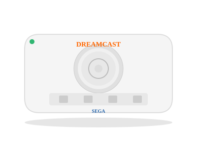

1998 年发布
Sega Dreamcast
世嘉末代主机 · GD-ROM介质 · 莎木神作 · 壮士断腕
~1040万
全球销量
GD-ROM
光驱格式
200MHz
CPU
¥29,800
日元价格
📖 历史与背景
1998年11月27日，世嘉在日本发布Dreamcast——世嘉最后一款游戏主机。DC由日裔IBM工程师Hideki Sato主导设计，搭载了日立SH-4 CPU（200MHz）和PowerVR2 GPU（由VideoLogic/NEC提供），在1998年展现出了惊人的3D性能。
DC的GD-ROM光盘容量为1GB（远大于传统CD-ROM），内置56k调制解调器（后期版本升级为宽带），让在线游戏成为DC的一大特色。DC的手柄设计独特——顶部可以插入VMU（Visual Memory Unit），VMU不仅有存储功能，还是一块小屏幕，可以显示游戏内容（如《莎木》中的菜单和迷你游戏）。
2001年1月31日，世嘉社长宣布Dreamcast停产并退出硬件市场——DC成为世嘉"壮士断腕"的标志。世嘉从此转型为第三方软件开发商。DC的全球销量约1040万台，虽然商业上失败，但留下了无数经典游戏。
⚙️ 硬件规格
CPU
Hitachi SH-4 RISC (200MHz)
GPU
PowerVR2 CLX2 (100MHz)
内存
16MB RAM + 8MB VRAM
光驱
GD-ROM (1GB)
显示
最高 640×480
音效
Yamaha AICA 64通道
网络
Modem / 宽带适配器
VMU
记忆卡带小屏幕
🎮 经典游戏
莎木
1999
开放世界鼻祖，史上最高开发成本游戏之一
索尼克大冒险2
2001
3D索尼克巅峰，黑暗索尼克
灵魂能力
1999
满分神作，刀剑格斗王者
疯狂出租车
2000
爽快街机风格开车
生化危机：代号维罗妮卡
2000
DC独占，克莱尔和史蒂夫的经典
街头涂鸦
2000
涂鸦+滑板，独创美术风格
Jet Set Radio
2000
另类滑板游戏，卡通渲染
斑鸠
2001
财宝社弹幕巅峰
💡 趣闻
- Dreamcast的名字意为"梦想广播"（Dream+Broadcast）——世嘉希望主机传递的是"梦想"
- DC支持在线游戏——通过内置调制解调器玩《梦幻之星Online》（世嘉的网络游戏大作）
- DC被破解非常彻底——GD-ROM的直读芯片（"引导盘"）让中国玩家以极低成本玩DC游戏
- 世嘉2001年退出硬件市场后，被任天堂、索尼和微软瓜分——世嘉的标志永远留在了Dreamcast之上